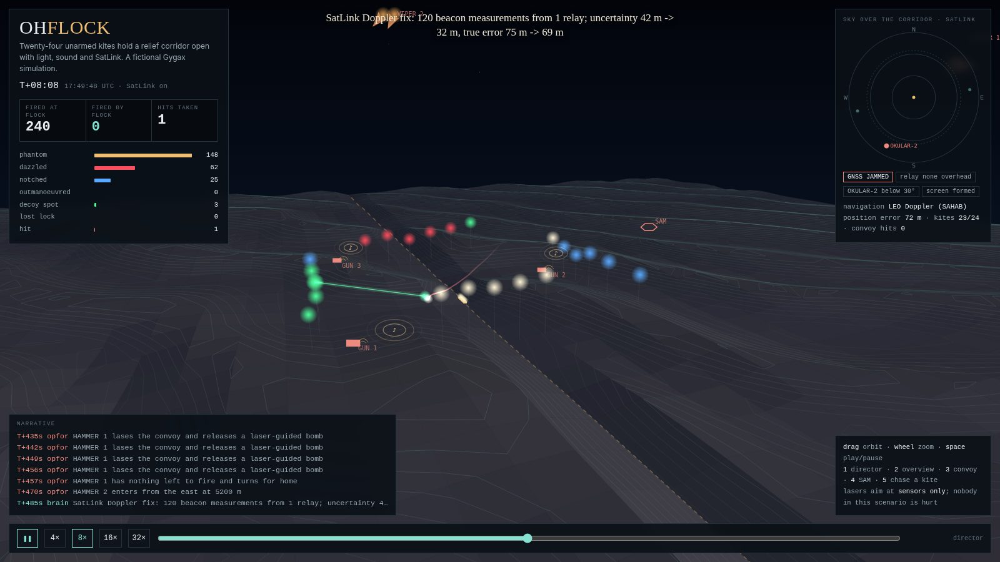

Run it again.
Seedable simulation and deterministic components help teams compare behavior under the same conditions. Repeatability is an aid to inspection, not proof of real-world correctness.
Neither should the systems we trust with the physical world. Gygax is an open-source runtime for agents, simulation, robotics, neuromorphic computing, and satellite tracking, designed to make behavior testable and authority explicit.
DETERMINISTIC BY DESIGN WHERE IT MATTERS · HUMAN AUTHORITY AT THE EDGE
Gygax brings the pieces of an autonomous system into one C++26 project: an agent runtime, a service, physical and simulated interfaces, and research tools. It is a toolkit for building and evaluating systems. It is not a promise that autonomy is safe by default.
Seedable simulation and deterministic components help teams compare behavior under the same conditions. Repeatability is an aid to inspection, not proof of real-world correctness.
Agents call tools. Devices use protocols. Modules and SDKs provide extension points. Keep model decisions separate from the interfaces that carry them out.
Device command access is disabled by default. Service networking, authentication, and physical safeguards remain deployment decisions that must be made deliberately.
“God does not play dice with the universe.”ATTRIBUTED TO ALBERT EINSTEIN · THEME, NOT A PROJECT CLAIM
Linux with Clang 18+ is the reference platform. The quick start builds the project and runs its in-process diagnostic suite before you connect a model or a device.
git clone https://github.com/magneato/gygax
cd gygax
./setup.sh # check prerequisites
./build.sh # compile into ./build
./build/gygax doctor # in-process self-testsBring up the API without a remote model. The built-in echo engine is useful for smoke testing and learning the endpoints.
./build/gygax serve --engine echo
./build/gygax statusBuild the library, point the Python bindings at it, then run the included STDP example.
export GYGAX_LIB=$PWD/build/libgygax_c.so
export PYTHONPATH=$PWD/python
python3 examples/python/stdp_demo.pyWindows 11 users should use the documented Docker Desktop / WSL2 workflow. See Windows setup. Production installation options are in Operations.
The architecture separates inference, agent orchestration, tools, embodiment, simulation, and transport. Connect the layers your use case needs; nothing requires every installation to control hardware.
chat API / Ollama API ─── service ─── inference pool ─── model backends
│ │
│ orchestrator ─── agents ─── registered tools
│ │ │
metrics / auth world model / events devices / logistics
│
simulation ── robot links ── transports
│ │
LiDAR / USD MAVLink / CAN / ROS
│
neuromorphic engine ── C ABI ── PythonFor module ownership, threading, the agent loop, extension points, and deliberate limits, read Architecture.
Gygax is broad by design. The capabilities below describe included source and examples; production readiness depends on each deployment, target, and safety case.
HTTP service with standard chat-completions and Ollama endpoints, model-aware routing, engine health probing, failover, optional peers, JSON-RPC, metrics, and graceful shutdown. Built-in echo works without a model server.
Objective-driven agent loops with tool calls, episodic memory, step limits, cancellation, worker pools, and event publication. Tools can be registered in-process, supplied by plugins/extensions, or exposed over MCP.
Hardware-style node trees, capability aggregation, hierarchical state machines, sensors, actuators, a message hub, temporal buffering, and embodiment taxonomy provide a common model for connected systems.
A 2D differential-drive world with collisions and LiDAR, UDP/TCP robot links, trajectory export to USD, and vectorized environments for repeatable experiments.
Vendor-neutral contracts for navigation estimates and QKD-backed authenticated secure channels. These are integration interfaces only: no quantum sensor driver, QKD provider, or cryptographic implementation is included. The Seek & Find replay's sensor and basis-sifting values are classical mock data.
LIF and Izhikevich populations, Poisson and spike-source populations, delayed sparse projections, seeded RNG, and pair-based STDP. Access the engine through C++, JSON/HTTP, the C ABI, and Python bindings.
MAVLink v1/v2, virtual autopilot, SocketCAN and CAN FD, ISO-TP, OBD-II, J1939, DBC, CANopen, Modbus, NMEA 0183, ADS-B, ARINC 429 library support, and rosbridge.
GUID-tracked entities, append-only ledger events, flow summaries, and range-aware route planning with refuel stops. The API is also available for tools and service integration.
C and C++ plugin SDKs, Python bindings and extension SDK, serial, GPIO, modem, printer and G-code transports, plus Gyde, the optional terminal console for inspecting and querying a running node.
Compare phase-aware tone estimates at explicit 2D observation points and sample synthetic amplitude-modulated alerts. This model has no speaker, audio-output, or flight-control integration; modeled cancellation at one point says nothing conclusive about other locations.
Checksum-verified two-line elements, SGP4 and SDP4 that reproduce the reference implementation’s verification output to 0.12 mm, look angles, Doppler from the exact range rate, rise/culminate/set pass prediction, radio retuning through Hamlib rigctld, and SDR reception over rtl_tcp with an FFT spectrum and a Doppler-removing mixer. From C++, the C ABI, Python (with a Skyfield-shaped subset), or gygax track. It never downloads elements; you bring them.
Examples are starting points for inspection and experimentation. They are not operational certification or performance guarantees.
Agents command a bunker, turrets, tanks, and drones. The example composes the orchestrator, tools, collective consensus, a ledger, route planning, and a small LIF-driven hostile hive. The built-in doctrine makes seeded battles reproducible; humans can direct the running simulation.
./build/wargames --map ./build/wargames --interactive ./build/wargames --script examples/wargames/orders.txt
Four rovers traverse a 2D environment with obstacles and LiDAR. One uses a spiking controller; a rover is then promoted over a UDP link to a hardware-style target. The example's far end is an emulator, not a field robot.
./build/arrival ./build/arrival --seconds 30 --real-seconds 5 \ --usd build/arrival.usda
Source: examples/arrival · Simulation docs: Robotics
An ISS element set, propagated by Gygax’s SGP4 and seen from the Royal Observatory on 1 January 2024. Each track runs horizon to horizon; the curve below is the Doppler shift of a 437.8 MHz downlink from the exact range rate: high as it rises, through zero overhead, low as it sets. Every point on this page was computed by gygax.satlink. Add --live --sdr and an RTL-SDR follows this curve second by second, reporting where the carrier really is.
./build/gygax track --tle examples/satlink/sample.tle \ --at 51.4779,-0.0015,46 --start 2024-01-01T12:00 --downlink 437.8e6
SGP4/SDP4 vs. Vallado’s reference set: 667 states, worst 0.12 mm · vs. Skyfield: 0.0003° elevation, 2.5 m range · How it is checked ↗

Twenty-four small unarmed aircraft hold a relief corridor open at night against fighters, a SAM battery, AAA and strike jets. Hundreds of rounds are fired at them. Lasers blind trackers and paint decoy spots (sensors only, never people), thrown sound draws the guns, radar missiles lose them in the notch, and SatLink keeps them navigating to tens of metres by satellite Doppler while GNSS is jammed. The convoy gets through untouched.
./build/ohflock --html build/ohflock.html ./build/ohflock --no-satlink # what the satellites were worth ./build/ohflock --serve 1987 # gyde --url http://127.0.0.1:1987
./build/gygax sim-autopilot, then follow the robotics guide to connect a service and issue commands to the virtual autopilot. The example is local simulation; real device control has separate safeguards and risks.The daemon runs with a selected inference engine, listens on a configured interface, and exposes health, readiness, metrics, and API endpoints. Deployment means choosing authentication, network placement, TLS termination, logging, supervision, and resource limits.
Keep the default loopback bind while developing. The echo engine lets you test service behavior without an external model.
./build/gygax serve \
--engine echoUse a local chat-completions endpoint such as Ollama, llama.cpp or another supported backend. Model performance and availability remain properties of that engine.
./build/gygax serve \
--engine http://127.0.0.1:11434/v1 \
--model llama3.1Use a strong bearer token, TLS termination for traffic leaving the host, a supervisor, monitoring, and the documented systemd/container guidance.
Safe defaults reduce exposure. They do not remove the need for engineering judgment, threat modeling, or target-specific safety design.
Device command tools are only registered when the service is launched with --device-commands (or the corresponding environment setting). Treat enabling commands as a deliberate authority change.
The service defaults to loopback and refuses a non-loopback bind without a token. For external traffic, use a TLS terminator and the token; the service itself speaks plain HTTP.
A simulated success demonstrates behavior in a model of the world. It cannot certify a controller, validate a physical deployment, or guarantee that a real machine will respond identically.
It adds no safety layer to a vehicle. Keep the autopilot's failsafes, geofence, and a physical emergency stop. Complete the domain's safety case before operating equipment.
Enabling device commands does not add per-command human approval. Gygax has no built-in approval gate or universal hardware/simulation interlock. For detailed boundaries, see Public API and trust boundaries, Operations, Robotics safety model, and Security reporting.
Gygax includes unit and integration tests, a built-in doctor command, and scripts for deeper build, sanitizer, and service checks. Start with the targeted check that matches your change.
./build/gygax doctor
ctest --test-dir build --output-on-failure
./scripts/lint.sh
./scripts/dogfood.shProtocol interoperability has reference checks documented in Robotics. See Architecture for concurrency and runtime design. Test coverage is not a claim that every supported device or deployment has been validated.
The repository documentation is the source of truth for exact behavior, configuration, and limitations.
Build the project, run the checks, inspect a showcase, and decide where the interfaces fit your system. Then test the assumptions that matter to your team.